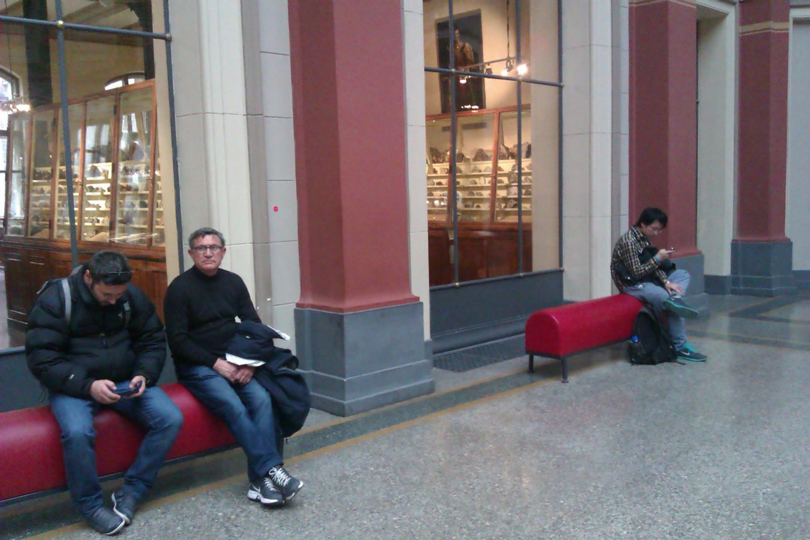

Troubleshooting
Google Lens cannot identify this: what to try next
If Google Lens cannot identify something, do not keep repeating the same search. Crop the image around the object, try a clearer angle, separate text from object recognition, and ask a visual reasoning app for clues and search terms. The failure is often not recognition; it is missing vocabulary.

Why Google Lens sometimes fails
Google Lens is strong when the picture has a clear match on the web. It can struggle when the object is partial, handmade, obscure, old, visually ambiguous, or part of a broader style. It can also return visually similar results without explaining what the thing is called.
Try this sequence
- Crop tightly around the object or detail you care about.
- Search again with the cleanest version of the image.
- If there is text, run OCR or translation separately.
- If it is style, design, or art, ask for visual clues and vocabulary.
- Use those words in a normal web search, Pinterest, Reddit, or marketplace search.
Use visual reasoning when matching is not enough
A picture can fail as a search query but still contain useful clues: material, shape, era, region, silhouette, pattern, iconography, or construction. Visual reasoning tools are useful when the question is “what should I call this?” rather than “where is the same picture online?”
For that workflow, a visual reasoning tool can be tested as a companion to Google Lens. Lens is the baseline for matching; reasoning-oriented tools are useful when you want an image explained and converted into better search language.
Common failure modes
| What you see | Likely reason | Recovery path |
|---|---|---|
| Only shopping cards appear | The image looks commercially recognizable. | Search with non-shopping vocabulary: material, shape, style, use case, or era. |
| Many lookalikes, no exact answer | The object is visually generic or copied across sites. | Use distinctive details, labels, seams, hardware, or context as separate clues. |
| No useful result | The crop is too broad, blurry, dark, or missing the object boundary. | Retake, crop, brighten, and search one object at a time. |
| Wrong object is identified | The background or nearby object is stronger than the target. | Mask or crop the target, then ask for a clue list before searching again. |
Evidence boundary
A better search phrase is not proof. Treat every AI-generated label as a hypothesis until it is confirmed by independent sources. If the image involves health, safety, law, identity, repair, or high-value appraisal, use the tool only to gather language and route the final judgment to a qualified source.
Related guides
Read next: Best Google Lens alternatives for picture questions, Best apps to identify things from pictures, and Google Lens vs visual reasoning apps.